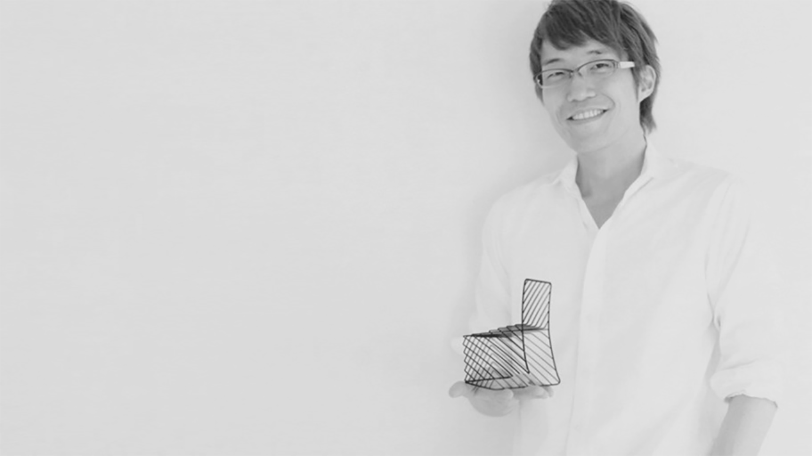

Nendo의 대표 사토오키

넨도의 사고방식
오키 사토는 그의 책 <넨도 디자인 이야기>에서 “주인공이기보다 인정받는 조연 정도의 연기자이고 싶다. 어떤 일이 주어져도 대응할 수 있는 매력을 보유하고 싶다”며 “의사와 비슷하다고 볼 수 있다. 진료하는 환자마다 최선을 다하지만 최고의 진료를 꼽을 수 없듯이 말이다”라고 말한다. 마치 하얀 점토처럼 물처럼 공기처럼 모든 것을 흡수하고 받아들일 준비가 되어 있는 것이다. 넨도가 어떻게 스타 디자이너 반열에 올라섰는지를 묻는다면, 그의 실력과 무모함으로 점철된 열정 때문이라 말하겠다. 일본을 비롯 동양권과 달리 서구 디자인계는 아직까진 기업이 과감한 시도를 기꺼이 감수하고 모험하는 경우가 많아 이름이 크게 알려지지 않은 젊은 디자이너에게 덜컥 큰 임무를 맡기기도 한다.
하지만 생각보다 그런 기업의 요구를 채워줄 남다른 감각을 지닌 동양의 디자이너가 많지 않다. 그렇기에 한 번도 기존 디자인 회사에서 일해본 적이 없어 그 어떤 관습에도 얽매이지 않았던, 그래서 더욱 무모했던 오키 사토의 적극적이면서도 성실한 자세가 세계적인 기업의 눈에 띄었을 것이다. 오키 사토가 추구 하는 넨도는 디자인 회사의 이름을 넘어 높은 품질의 디자인을 안정적으로 공급하는 하나의 사고 방식이다. 그가 궁극적으로 디자인하고 싶은 것은 넨도라는 이름이 찍힌 제품이 아니라 넨도의 정신을 담은 무형의 플랫폼, 즉 사용자 개개인이 디자인에 관여할 여지를 남겨둔 느슨하고 유연한 디자인 프랙티스다.
넨도에게 아트와 디자인은 어떤 의미인가?
아트는 나에게서 나온다. 정치적일 수도 있고 매우 감정적일 수도 있다. 그림으로 나내자면 화살이 나 자신을 향하고 있는 것이다. 한편 디자인은 텅 비워야 한다. 물처럼 공기처럼 다른 것을 투영하고 흡수해야 한다. 나는 사실 디자인하고 싶은 것이 없다. 클라이언트게 모든 재료가 있으니 나는 비워야 한다. 종종 클라이언트는 자기 자신이 뭘 원하는지 모르기도 한다. 문제가 무엇인지 모른다는 얘기인데, 즉 문제를 푸는 것뿐 아니라 문제를 찾아 제를 해결하는 것까지가 디자이너의 영역이다. 이는 뜨거운 심장보다는 머리에서 나온다. 내가 되도록 머리를 깨끗하게 비워두는 이유이기도 하다. 클라이언트의 이야기를 듣고 10개 상 해결 방안이 떠오르지 않는다면 성공적인 프로젝트가 아닐 가능성이 높다.
어떻게 지금처럼 세계적으로 가장 인기 있는 디자이너가 됐나?
정말 모르겠다. 많은 스타 디자이너들은 대표작이라는 게 있지 않나. 우리는 절대 그런 걸작이랄 게 없다. 우리를 아는 이도 있지만 어떤 이는 이름 대신 작업의 느낌만 기억하거나 어 는 아예 이름조차 모른다. 사실 나도 내가 한 수많은 작업의 제목이나 발표 연도 등 절대 다 기억하지 못한다.(웃음) 우리는 단지 눈앞에 주어진 프로젝트에 집중해 차근차근 해나갈 뿐다.
멘토로 삼은 디자이너가 있나?
늘 받는 질문인데 곤란하게도 나는 딱히 이름을 댈 마스터가 없다. 영감은 온 천지에서 다 받는다. 개인이 받아들이기에 너무 과도한 정보가 넘쳐나는 게 오히려 문제다. 내 디자인적 감의 원천을 굳이 떠올린다면, 어린 시절 매우 좋아했던 애니메이션 캐릭터 도라에몽이라고 하겠다. 도라에몽은 사람들이 난관에 봉착할 때마다 주머니에서 문제를 해결하는 도구를 꺼낸다. 설명서 없이도 바로 사용할 수 있는 직관적인 도구인데, 그 도구는 늘 완벽하지 않고 고장이 난다. 그 결함 때문에 흥미로운 이야기가 전개된다. 나의 디자인적 관점도 이와 비하다. 의자는 안락함만을 위해 존재하는 게 아니기에 완벽한 의자란 불가능하고 그래서 저마다의 디자인이 존재하는 것이다.
‘넨도식 디자인’을 어떻게 정의할 수 있을까?
우선 재질, 색깔, 모양으로 정의할 수는 없고 결국 스토리텔링이라고 본다. 좋은 디자인이란 당장 엄마에게 전화를 걸어 설명할 수 는 것이라고 늘 말해왔다. 아무런 전문 지식이 없는 이에게 전화로 제품 콘셉트를 들려줬을 때 얼마나 직감적으로 내용을 이해시킬 수 있느냐 하는 것이다. 다만 스토리가 과도하게 특한 것이어서는 안 된다. 사람들은 자기가 느껴보지 못한 생소한 것에 대해서는 공감하지 못하기 때문이다.
넨도의 디자인이 일본적인 세계관을 반영한다고 할 수 있을까?
넨도와 일본스러움을 결부 짓는 이도 있지만 나 스스로는 ‘그냥 디자이너’다. 내 안에 있는 일본스러움은 그게 무엇이건 내가 신경 쓴다고 제어할 수 있는 것이 아닌 것 같다. 침착하게 내가 생각하 로 생각하고 내가 디자인하는 대로 디자인할 뿐이다.
디자이너로서 궁극적인 목표는 무엇인가?
목표를 만들지 않기 위해 최선을 다하는 것이다. 이세이 미야케와 캐비지 체어 작업을 할 때, 나는 여전히 건축학도로서 늘 목적이 명확해야 다는 명제를 따라 돌진하던 중이었다. 근데 어느 순간 미야케가 “거기까지만 하죠”라고 하더라. 어느 정도 이루었다고 생각할 때 멈춰야 한다고 말했다. 내가 다 된 거 같으면 다 된 것다. 어느 순간을 동결(freeze)시키고 또 유연해야 하는지를 아는 것, 그 두 과정을 잘 조절하는 것이 훌륭한 디자이너의 요건인 것 같다. 세계적으로 성공한 디자이너들은 어느 타이밍 이디어를 유연하게 풀어주고 언제 다시 견고하게 굳힐지에 능한 이들이다.
디자이너가 되지 않았다면 지금 무얼 하고 있을까?
반려동물 매장 주인이 되었을 거 같다. 강아지, 거북이 등 반려동물을 매우 좋아한다. 어떻게 보면 현재 디자이너라는 직업 또한 반동물 매장 주인과 크게 다를 것 없다. 이제 갓 태어난 작은 아이디어를 밥을 주고 잘 보살펴 키운 뒤 어느 정도 몸집을 불리게 되면 클라이언트한테 양도해야 한다. 종종 이름도 붙여주고 말이다.
월간디자인